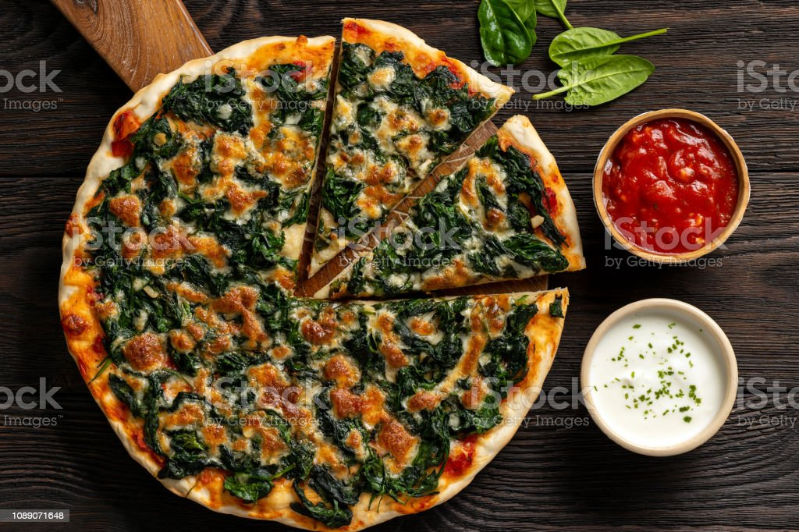

Ispanaklı Pizza Tarifi
Açıklama
Ispanaklı Pizza, geleneksel pizza tarifine eşsiz bir twist katan lezzetli bir pizzadır. Temel olarak pizza hamurunun üzerine, doğranmış veya kıyılmış ıspanak yaprakları eklenerek hazırlanır. Bu lezzetli sebzeye ek olarak, pizza üzerine genellikle rendelenmiş mozzarella peyniri, domates sosu, dilimlenmiş siyah zeytin, rendelenmiş parmesan peyniri ve baharatlar da eklenir.
Ispanak, pizza yapımında kullanılan geleneksel malzemelerden biraz farklı olsa da, ona zengin bir lezzet ve sağlıklı besin değeri katmaktadır. Ispanak, demir, kalsiyum, A, C ve K vitaminleri gibi bir dizi önemli vitamin ve mineral kaynağıdır. Bu nedenle, ıspanaklı pizza, sağlıklı bir atıştırmalık veya ana yemek seçeneği olarak tercih edilebilir.
Ispanaklı pizza, pizza severlerin damak tadına hitap eden hoş bir alternatif olmakla birlikte, sağlıklı beslenmeyi önemseyenler için de çekici bir seçenektir. Özellikle çocukların sebzeleri yemelerine yardımcı olabilecek bu eşsiz lezzeti denemenizi öneririm!
Unutmayın, pizza tariflerinde kişisel tercihlerinize göre farklı malzemeler ekleyebilir veya çıkarabilirsiniz. Ispanaklı pizza, pizza dünyasında farklı bir lezzet arayanlar için harika bir seçenektir. Afiyet olsun!
Gerekli Malzemeler
Pizza Hamuru İçin:
- 2,5
su bardağı
un
- 1
su bardağı
ılık su
- 1/2
tatlı kaşığı
kuru maya
- 1/2
tatlı kaşığı
toz şeker
- 2
yemek kaşığı
zeytinyağı
- 1/2
tatlı kaşığı
tuz
Sosu İçin:
- 2
yemek kaşığı
domates salçası
- 3/4
su bardağı
ılık su
- 1
yemek kaşığı
zeytinyağı
- 1
tatlı kaşığı
kekik
- 1
çay kaşığı
biberiye
- 1/4
çay kaşığı
tuz
Üzeri İçin
- 400
gram
ıspanak
- 1
adet
küçük boy kuru soğan
- 1
diş
sarımsak
- 2
yemek kaşığı
zeytinyağı
- 200
gram
rendelenmiş mozzarella peyniri
Ispanaklı Pizza Tarifi

- Ilık su, kuru maya ve toz şekeri bir kapta karıştırdıktan sonra mayanın aktive olması için 10 dakika kadar bekletin.
- Elenmiş un ve tuz karışımını derin bir kaba aldıktan sonra orta kısmını açın. Zeytinyağı ve maya karışımını da kattıktan sonra tüm malzemeyi orta kısımdan kenarlara doğru karıştırmaya başlayın.
- Toparlanan pizza hamurunu mümkünse mermer bir tezgah üzerinde büyük bir beze haline getirdikten sonra üzerini streç filmle kaplayın ve oda ısısında mayalanması için 30 dakika kadar bekletin.
- Kolay bir pizza sosu hazırlamak için; domates salçasını ılık suyla karıştırıp kıvamını açın. Zeytinyağı, kekik, biberiye ve tuz eklediğiniz sosu karıştırın.
- Mayalanan pizza hamurunu iki eşit bezeye ayırın. Hafif bir şekilde unlanmış mutfak tezgahı üzerinde elinizle büyüterek yuvarlak şeklinde açtıktan sonra dikkatli bir şekilde fırın tepsilerine ayrı ayrı yerleştirin.
- Pizzanın üzeri için; kuru soğanı çok küçük parçalar halinde doğrayın. Sarımsağı rendeleyin. Kök kısımlarını temizleyip bol suda yıkadıktan sonra kuruttuğunuz ıspanakları ince ince doğrayın.
- Geniş bir tavada zeytinyağını kızdırdıktan sonra kuru soğan ve sarımsağı hafif bir renk alana kadar soteleyin. Doğranmış ıspanağı katıp suyunu çekene kadar kavurun.
- Kavrulmuş ıspanağın fazla suyunun kaldığını düşünüyorsanız kullanmamak üzere bir kenara ayırdıktan sonra ıspanaklı harcı soğuması için bir kenarda bekletin.
- Kekik kokulu domates sosunu bir kepçe yardımıyla pizza tabanlarının orta kısmından başlayarak kenarlara doğru yayın. Kenar kısımlarında yaklaşık bir parmak kalınlığında pay bırakmayı unutmayın.
- Kavrulmuş ıspanaklı harcı eşit olarak pizzaların üzerine paylaştırın. Rendelenmiş mozzarella peyniriyle üzerlerini kapatın.
- Önceden ısıtılmış 250 derece fırında yaklaşık 12 dakika peynirler eriyip, kızarana kadar pişirdiğiniz pizzaları sıcak olarak servis edin. Dilim dilim sevdiklerinizle paylaşın.
En Üst Kısma Çık